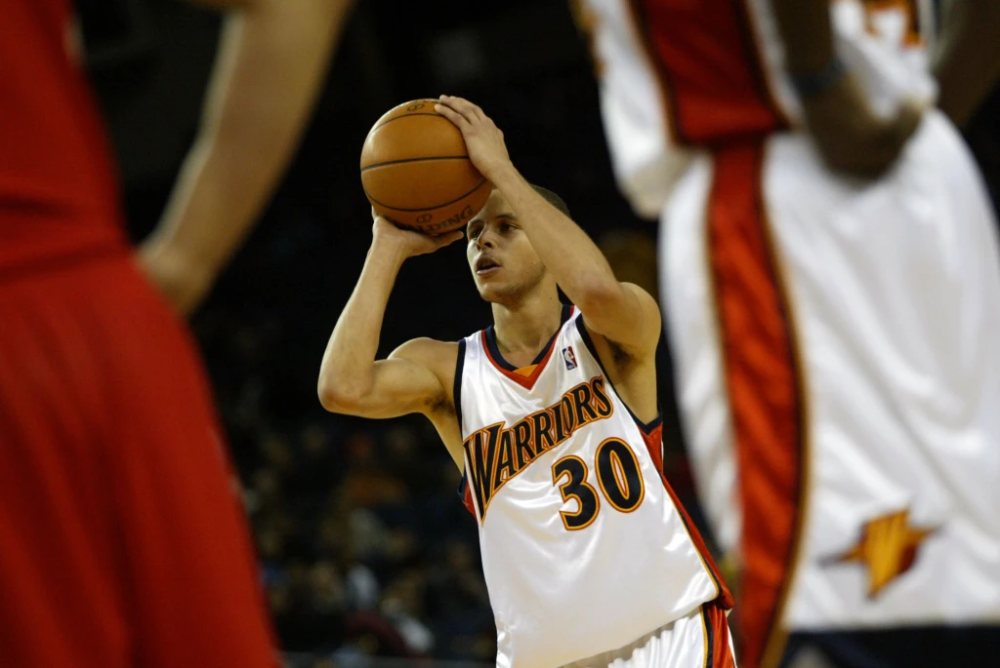
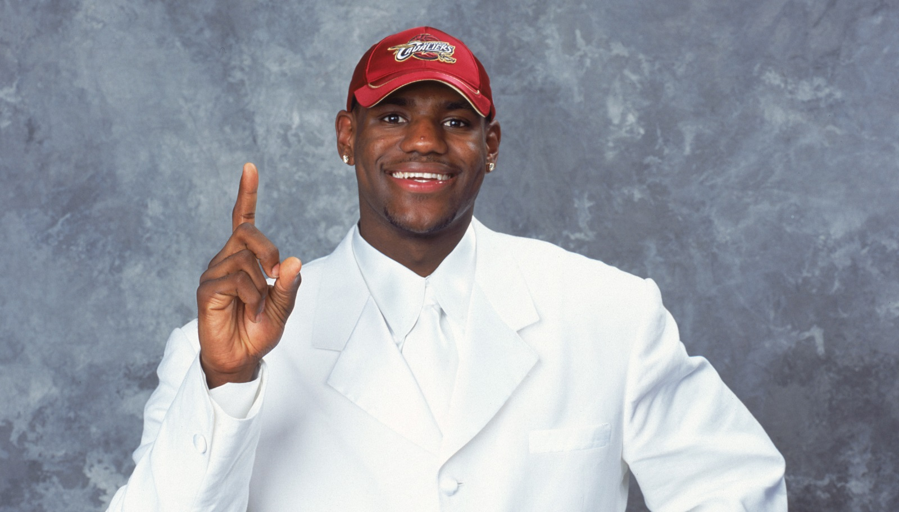
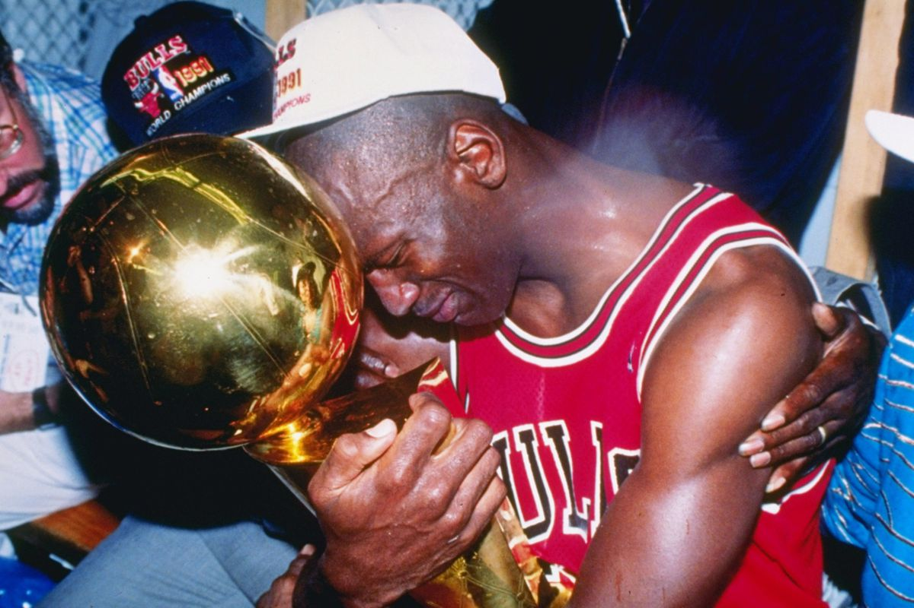
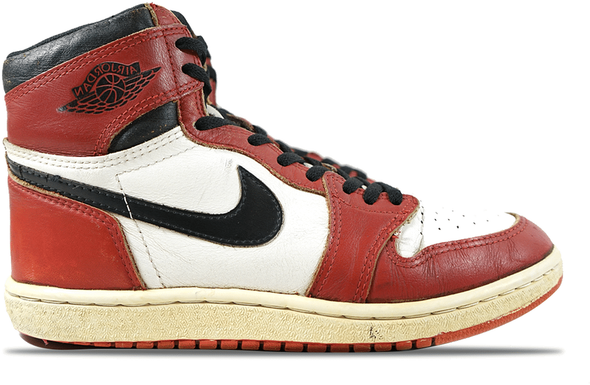
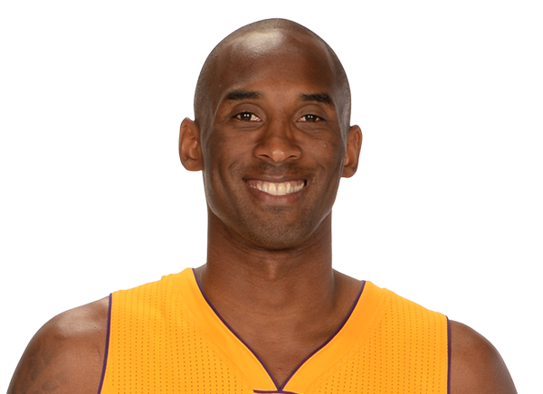
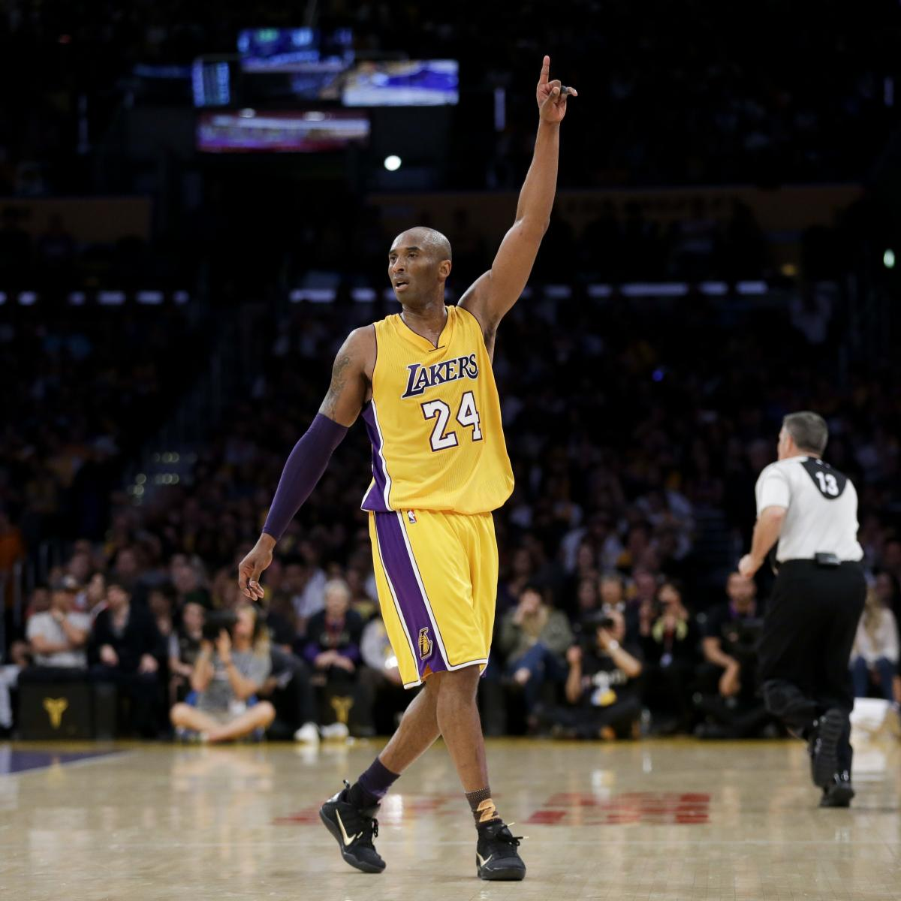
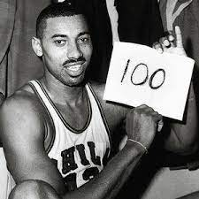
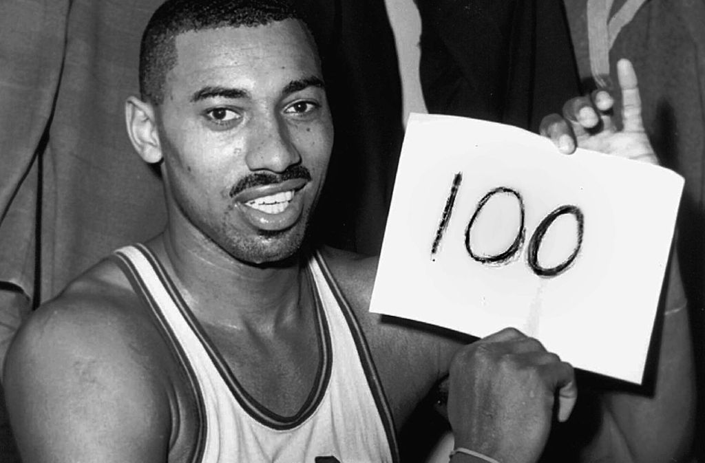

Stephen Curry

HEIGHT
6ft 3in
/1.90m
BORN
AGE
FROM
NBA DEBUT
YEARS IN NBA
PREVIOUSLY
WEIGHT
185lbs
83.9kg
3/14/1988
33
St. Vincent
2003
18
GSW 2009-22

Curry first Game
Professional basketball player Stephen Curry of the Golden State Warriors was the first person to be named Most Valuable Player by unanimous vote in NBA history.
Who Is Stephen Curry?
Stephen Curry is a professional American basketball player with the Golden State Warriors. The son of former NBA player Dell Curry, Stephen first garnered national attention for his impressive play at Davidson College. He was drafted in 2009 by Golden State and eventually developed into one of pro basketball's top players with his stellar shooting skills. After garnering Most Valuable Player honors and helping the Warriors win the NBA championship in 2015, Curry led the team to a league-record 73 wins the following season. In May 2016, Curry became the first person to be named MVP by unanimous vote in NBA history, and one of only 11 players to win the MVP award two years in a row. He then helped the Warriors win the NBA title again in 2017 and 2018, both times over the Cleveland Cavaliers.
Early Life and Family
Stephen Curry was born Wardell Stephen Curry II in Akron, Ohio on March 14, 1988, but mainly grew up in Charlotte, North Carolina. The oldest son of former NBA player Dell Curry, Curry learned the fundamentals of basketball by watching and practicing with his father. However, it was mom Sonya, a former Division I volleyball star, who instilled the discipline to train in her son while Dell Sr. was with his team on road trips.
Curry has two siblings. His younger brother, Seth Curry, went on to a career in professional basketball after starring at Duke University. Stephen’s sister Sydel became a volleyball player at Elon University.
College Career and NBA Draft
Lightly recruited by major college basketball programs despite a standout career at Charlotte Christian School, Curry enrolled at tiny Davidson College near his hometown. He immediately showcased his skills by scoring 32 points against the University of Michigan in his second game and wound up earning Southern Conference freshman of the year honors.
"Make it work no matter what you have to work with – that’s something that stuck with me very early on as a point guard. Adjust. Get creative. Try a different angle, a different lane, a different move or a different shot – just make it work."
Stephen Curry stats
| Year | PPG | APG | RPG | FG% |
|---|---|---|---|---|
| 2015-16 | 30.1 | 6.7 | 5.4 | 50.4 |
| 2021-22 | 25.7 | 6.5 | 5.5 | 41.5 |
| CARRER | 24.3 | 6.3 | 4.6 | 47.3 |
Lebron James

HEIGHT
6ft 9in
/2.06m
BORN
AGE
FROM
NBA DEBUT
YEARS IN NBA
PREVIOUSLY
WEIGHT
250lbs
113kg
30/12/1983
37
Davidson
2009
10
CLE 2003-08
MIA 2009-2014
CLE 2015-2019
LAL 2019-2022

Lebron being drafted at only 18 years old

Lebron dunking
LeBron James became an immediate star after skipping college to join the NBA's Cleveland Cavaliers. He led the Miami Heat to NBA titles in 2012 and 2013 and won another championship with Cleveland in 2016, before joining the Los Angeles Lakers in 2018.
Who Is Lebron James?
LeBron James is an American basketball player with the Los Angeles Lakers. James first garnered national attention as the top high school basketball player in the country. With his unique combination of size, athleticism and court vision, he became a four-time NBA MVP. After leading the Miami Heat to titles in 2012 and 2013, James returned to Cleveland and helped the franchise claim its first championship in 2016.
Early Life and High School basketball carrer
James was born on December 30, 1984, in Akron, Ohio. At an early age, James showed a natural talent for basketball. He was recruited by St. Vincent-St. Mary High School to join their basketball team in 1999. Overall, James scored 2,657 points, 892 rebounds and 523 assists during his four years there.
Deciding to finish his education, James had a tremendous senior year on the court. He averaged 31.6 points per game, helping his team clinch their third state title. The St. Vincent-St. Mary High School team also earned the top national ranking that year. James would soon emerge as one of the National Basketball Association's leading players.
Championships and Rings
James participated in eight straight NBA championships from the 2010-11 season to the 2018-19 season. During that time, he captured three championship rings: twice with the Heat (2011-12 and 2012-13) and once with the Cavaliers (2015-16).
Salary and Earnings
In the 2016-17 season, James collected a $31 million salary, making him the third player to earn that much after Jordan and Bryant. The NBA superstar went on to sign a four-year, $153.3 million contract with the Lakers in July 2018. He’s also a co-owner of the production company SpringHill Entertainment and has invested in Blaze Pizza. In February 2019, Forbes magazine's estimated James’ yearly earnings at $88.7 million, making him the NBA's highest-earning player for the fifth year in a row.
"Warren Buffet told me once and he said always follow your gut. When you have that gut feeling, you have to go with don't go back on it."
Lebron James stats
| Year | PPG | APG | RPG | FG% |
|---|---|---|---|---|
| 2013-14 | 27.1 | 6.3 | 6.9 | 56.7 |
| 2021-22 | 29.1 | 6.3 | 7.7 | 52.2 |
| CARRER | 27.1 | 7.4 | 7.4 | 50.3 |
Michael Jordan

HEIGHT
6ft 6in
/1.98m
BORN
AGE
FROM
NBA DEBUT
YEARS IN NBA
PREVIOUSLY
WEIGHT
225lbs
100kg
17/2/1963
58
UNC
1984
18
BULLS 1984-1998
HOR 2001-2003

Jordan winning his 6th championship

Jordan shoes
Michael Jordan is a former American basketball player who led the Chicago Bulls to six NBA championships and won the Most Valuable Player Award five times.
Who Is Michael Jordan?
Michael Jordan is a former professional American basketball player, Olympic athlete, businessperson and actor. Considered one of the best basketball players ever, he dominated the sport from the mid-1980s to the late 1990s.
Jordan led the Chicago Bulls to six National Basketball Association championships and earned the NBA's Most Valuable Player Award five times. With five regular-season MVPs and three All-Star MVPs, Jordan became the most decorated player in the NBA.
Early Life
Michael Jeffrey Jordan was born on February 17, 1963, in Brooklyn, New York. Growing up in Wilmington, North Carolina, Jordan developed a competitive edge at an early age. He wanted to win every game he played.
Jordan's father, James, introduced him to baseball and built a basketball court in their backyard. James was murdered in the summer of 1993 when two teenagers shot him in his car in an apparent robbery as he was driving from Charlotte to Wilmington, North Carolina. He went missing for 11 days until his body was found in a swamp in McColl, South Carolina. The teens were later tried and convicted of the crime and received life sentences for first-degree murder.
Awards
Jordan received his first Most Valuable Player Award from the NBA in 1988—an honor he would earn four more times, in 1991, 1992, 1996 and 1998.
In April 2009, Jordan received one of basketball's greatest honors: He was inducted into the Naismith Memorial Basketball Hall of Fame. Attending the induction ceremony was a bittersweet affair for Jordan because being at the event meant "your basketball career is completely over," he explained.
The Last Dance
After the 2019-20 NBA season was halted by the coronavirus pandemic, ESPN's spring 2020 airing of The Last Dance, a 10-part documentary about the Jordan-led 1997-98 Bulls, became must-watch viewing for basketball fans. Along with featuring archival footage of Jordan and interviews with teammates and opponents, The Last Dance explored the tension between the Bulls' front office and its peerless superstar over his final triumphant year with the team.
"I can accept failure, everyone fails at something. But I can't accept not trying"
Michael Jordan stats
| Year | PPG | APG | RPG | FG% |
|---|---|---|---|---|
| 1984-85 | 28.2 | 5.9 | 6.5 | 51.5 |
| 1986-87 | 37.1 | 4.6 | 5.2 | 48.2 |
| CARRER | 30.1 | 5.3 | 6.2 | 49.3 |
Kobe Bryant
HEIGHT
6ft 6in
/1.98m
BORN
AGE
FROM
NBA DEBUT
YEARS IN NBA
PREVIOUSLY
WEIGHT
220lbs
98kg
23/8/1978
41(Death)
Lower Merion
1996
21
LAL 1996-2016

Kobe last game
Kobe death
Former pro basketball player Kobe Bryant won five NBA titles with the Los Angeles Lakers while establishing himself as one of the game's all-time greats. He died tragically in a helicopter crash on January 26, 2020.
Who was Kobe Bryant
Kobe Bryant spent his early years in Italy and joined the NBA straight out of high school. A dominant scorer, Bryant won five NBA championships and the 2008 MVP Award with the Los Angeles Lakers. Although later seasons were marred by injuries, he surpassed Michael Jordan for third place on the NBA all-time scoring list in December 2014 and retired in 2016 after scoring 60 points in his final game. In 2018, Bryant earned an Academy Award for Best Animated Short Film for Dear Basketball. On January 26, 2020, he was in a helicopter crash that killed Bryant, his 13-year-old daughter Gigi and seven others.
Early Life
Kobe Bean Bryant was born on August 23, 1978, in Philadelphia, Pennsylvania. Named after a city in Japan, Bryant is the son of former NBA player Joe "Jellybean" Bryant.
Though he boasted good grades and high SAT scores, Bryant decided to go straight to the NBA from high school. He was selected by the Charlotte Hornets with the 13th overall pick of the 1996 NBA draft and was subsequently traded to the Los Angeles Lakers.
NBA Career and Stats
In his second season with the Lakers, Bryant was voted a starter for the 1998 All-Star Game, becoming the youngest All-Star in NBA history at 19. The shooting guard then teamed up with superstar center Shaquille O'Neal to win three consecutive NBA championships and was voted first-team all-NBA from 2002-2004. He also inked multi-year endorsement deals with Adidas, Sprite and other top sponsors.
In 2008, Bryant was named Most Valuable Player and carried his team to the NBA Finals, where they lost to the Boston Celtics. In the 2009 NBA Finals, the Lakers beat the Orlando Magic to win the championship. Shortly afterward, Bryant was part of the memorial service to honor friend and music superstar Michael Jackson. The following year, the Lakers won their second straight title by defeating the Celtics.
Although Bryant returned in time for the start of the 2015-2016 NBA season, he personally struggled alongside his young Lakers teammates. In November 2015, he announced that he would retire at the end of the season. "This season is all I have left to give," he wrote on The Players' Tribune website. "My heart can take the pounding. My mind can handle the grind but my body knows it's time to say goodbye."
Death
On January 26, 2020, Bryant was onboard a Sikorsky S-76 helicopter that crashed in the Los Angeles suburb of Calabasas. Nine people, including Bryant and his 13-year-old daughter Gianna "Gigi," died. The helicopter was on its way from Orange County to Thousands Oaks, California where Bryant was scheduled to coach a tournament game at Mamba Sports Academy.
"It’s the one thing you can control. You are responsible for how people remember you—or don’t. So don’t take it lightly."
Kobe Bryant stats
| Year | PPG | APG | RPG | FG% |
|---|---|---|---|---|
| 1996-97 | 7.3 | 1.3 | 1.9 | 41.7 |
| 2005-06 | 35.4 | 4.5 | 5.3 | 45.0 |
| CARRER | 25.0 | 4.7 | 5.2 | 44.7 |
Wilt Chamberlain
HEIGHT
7ft 1in
/2.16m
BORN
AGE
FROM
NBA DEBUT
YEARS IN NBA
PREVIOUSLY
WEIGHT
275lbs
125kg
21/8/1936
63(Death)
Kansas
1959
15
PHW 1959-1963
PHI 1964-68
LAL 1969-74

Wilt playing for Harlem

Wilt 100 points game
Wilt Chamberlain was the first NBA player to score more than 30,000 cumulative points over his career, and the first and only player to score 100 points in a single game.
Who was Wilt Chamberlain?
Known as "Wilt the Stilt" for his 7'1" frame, Wilt Chamberlain was a Harlem Globetrotter before joining the Philadelphia Warriors. He achieved an average of 30.1 points per game over his career and holds several records, including for most points scored in one season (4,029) and most points scored in a single game (100). Chamberlain was inducted into the Basketball Hall of Fame in 1978. He died in Bel-Air, California, in 1999.
Early Life and Education
Wilton Norman Chamberlain was born on August 21, 1936, in Philadelphia, Pennsylvania. Chamberlain was regarded as one of the greatest basketball players of all time as the first NBA player to score more than 30,000 points during his professional career.
Chamberlain was a standout player at Overbrook High School in Philadelphia. He played on the school's varsity team for three years, scoring more than 2,200 points in total. Standing at 6'11" tall at the time, Chamberlain physically dominated other players. He eventually reached his full height of a staggering 7'1" tall. Many of his nicknames were derived from his stature. He hated being called "Wilt the Stilt," or "the Stilt," which came from a local reporter covering high school athletics. But Chamberlain didn't mind "The Big Dipper," or "Dipper," a nickname given to him by friends because he had to duck his head when passing through a doorframe.
Basketball carrer
Leaving college in 1958, Chamberlain had to wait a year before going pro due to NBA rules. He chose to spend the next season performing with the Harlem Globetrotters before landing a spot with the Philadelphia Warriors. In 1959, Chamberlain played his first professional game in New York City against the Knicks, scoring 43 points. His impressive debut season netted him several prestigious honors, including the NBA Rookie of the Year and NBA Most Valuable Player awards. Also during this season, Chamberlain began his rivalry with Celtics defensive star Bill Russell. The two were fierce competitors on the court, but they developed a friendship away from the game.
Chamberlain's most famous season, however, came in 1962. That March, he became the first NBA player to score 100 points in a game, setting a league record for the highest number of points scored in a single game (which he still holds today). By season's end, Chamberlain racked up more than 4,000 points—becoming the first NBA player to do so—scoring an average of 50.4 points per game. At the top of his game, Chamberlain was selected for the All-NBA first team for three consecutive years: 1960, 1961 and 1962.
Death and Legacy
Chamberlain died of heart failure on October 12, 1999, at his Los Angeles home. He once said that "no one cheered for Goliath," but the response to his passing proved that to be false. "Wilt was one of the greatest ever, and we will never see another like him," said basketball star Kareem Abdul-Jabbar. His former rival Bill Russell told the press that "he and I will be friends through eternity."
"They say that nobody is perfect. Then they tell you practice makes perfect. I wish they'd make up their minds"
Wilt Chamberlain stats
| Year | PPG | APG | RPG | FG% |
|---|---|---|---|---|
| 1959-60 | 37.6 | 2.3 | 27.0 | 46.1 |
| 1961-62 | 50.4 | 2.4 | 25.7 | 50.6 |
| CARRER | 30.1 | 4.4 | 22.9 | 54.0 |